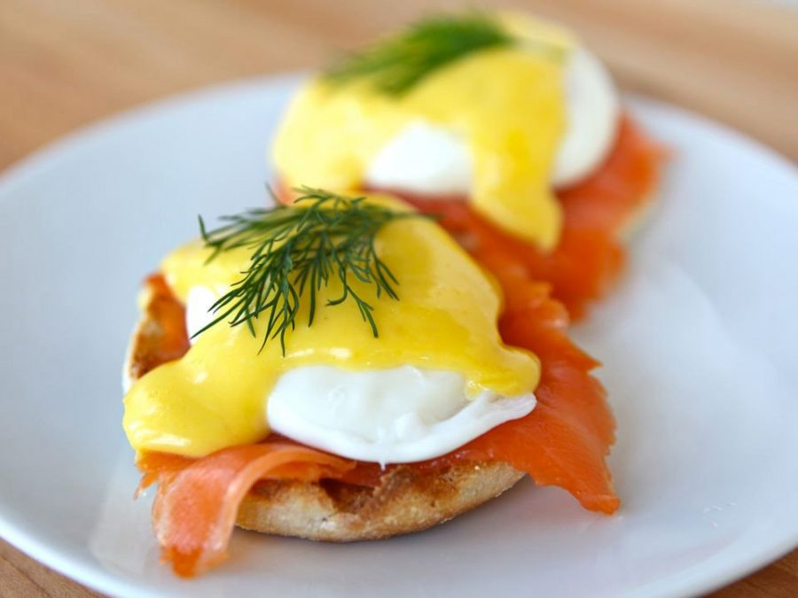

Eggs Benedict!

Description
Eggs Benedict are a great breakfast dish that can be paired with a nice hot cup of coffee for a refreshing and energetic start to the day! This dish is a great brunch item and originates in New York City.
Eggs Benedict consists of two halves of an English muffin, each topped with Canadian turkey bacon, a poached egg, and hollandaise sauce. Several variations of Eggs Benedict exist, involving replacing any component except the egg:
Avocado Toast Eggs Benedict - substitutes toast in place of the muffin and adds sliced avocado.
One of the most popular variations of Eggs Benedict is to make it with salmon instead of meat/bacon. Today we will be making this variation of Eggs Benedict!
Ingredients
- ¾ cup plain low-fat yogurt
- 2 teaspoons lemon juice
- 3 egg yolks
- ½ teaspoon prepared Dijon-style mustard
- ¼ teaspoon salt
- ¼ teaspoon white sugar
- 1 pinch ground black pepper
- 1 dash hot pepper sauce
- 8 eggs
- 8 slices rye bread
- 8 ounces smoked salmon, cut into thin slices
- 1 tablespoon chopped fresh parsley, for garnish
- 1 teaspoon capers, for garnish
Steps
- To make the sauce: In the top of a double boiler, whisk together yogurt, lemon juice, egg yolks, mustard, salt, sugar, pepper and hot sauce. Cook over simmering water while stirring constantly, for 6 to 8 minutes, or until sauce is thick enough to coat the back of the spoon.
- In a large stock pot heat 2 quarts of salted water to a boil. Carefully break the eggs one at a time into the boiling water. When all the eggs have been added, reduce the heat to medium. When the eggs float to the top, remove them with a slotted spoon and let drain briefly.
- To assemble final dish: Toast bread slices and place on warm plates. Top each piece of toast with a slice of smoked salmon and a hot poached egg. Drizzle with yogurt sauce; garnish with parsley and capers.